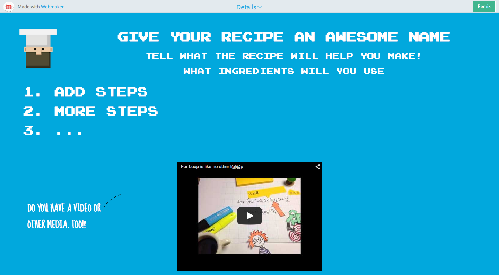

Section 3. Participating on the Web
Privacy Coach
This activity was remixed from Hive Toronto, and the original project was funded by the Office of the Privacy Commissioner of Canada (OPC). Remixed for Clubs by Mozilla.
Learners mentor their peers to enhance their privacy through their online or digital activities. Knowledge and expertise is shared through discussion or by remixing a response template to report on experiences.
45 mins - 1 hour
-
10
minTeaching in Pairs
Begin the session by explaining that everyone has something to learn and to teach about privacy.
Ask learners what skills they could teach someone else to enhance their privacy in everyday life. Some options where learners may already have experience might be:
Private Browsing:
Many web browsers allow for “private windows.” In the most recent version of Firefox the process to open a private window is explained in a help resource. Using a private window is very helpful if you are using a public computer at a library or internet cafe and want to prevent information like your email address from being remembered by the computer and seen by other users. Help someone learn about private browsing.
Privacy Settings:
Numerous social media sites have pages where users can enhance their privacy through settings. Update your knowledge of privacy settings for a social media service such as Facebook or Twitter, and share what you've learned with someone else. You may help someone create a list of friends, followers, or restrict who can see certain posted content.
Browser Add-ons:
Various browser add-ons exist that may enable you to better understand the surveillance of your internet use and/or enhance your privacy. Some examples of browser add-ons include Lightbeam, which Mozilla created to visualize third party tracking that occurs when you use the web. Privacy Badger by the Electronic Frontier Foundation enables you to block third party tracking. Find a privacy relevant browser add-on, try it out, and help someone else to understand it.
Facilitate a Privacy Activity:
There are numerous activities including discussions, brainstorming or web making activities that you could facilitate to earn the coach badge. If you need more ideas, see Hive Toronto's privacy activities or the Web Clubs Curriculum. As one example, you could coach another person or a group to create a data trail timeline. The Data Trail Timeline activity helps a group share and reflect when your personal information is collected in a typical day.
Privacy Alternatives:
Numerous designs exists which attempt to enhance user privacy online. Check out the Duck Duck Go search engine which does not collect internet protocol addresses as part of running searches, or Diaspora a social networking site where users are not expected to use their real identities. You can also take a look at CryptoCat which encrypts chat conversations. Please note that the creators of more privacy sensitive technologies often post warnings about their technologies to indicate that you should never trust a technology with your most sensitive information, or trust it with your life. Pass along what you've learned about a privacy alternative to someone else but keep in mind the limitations of the technology.
Virtual Private Networks and Proxy Servers:
Virtual private networks (VPNs) and proxy servers are sometimes used by internet end users to browse the web more anonymously. If you use a VPN or proxy server, show someone how you make use of it. If you are new to VPNs and proxy servers, The Electronic Privacy Information Center (EPIC) maintains a list of VPN and proxy servers that you may wish to explore. Please note that you may not be fully anonymous when using a VPN or proxy server because technology is not perfect.
Have learners team up into pairs. Invite the learners to think briefly about a privacy skill they can share with their partner.
For five minutes, the first partner teaches their skill to their partner. Then switch. Have learners spend this time sharing what they know about privacy. Encourage true peer to peer teaching and learning, and support learners who have questions and concerns about their privacy.
After both partners have gone, gather back as a large group. Ask a few pairs to briefly explain what their partner taught them. Encourage them to reflect on what made instructions easy to understand and memorable.
-
10
minsDocument the Steps
In the same pairs, invite your learners to write a brief summary of the steps required to learn their skill. Encourage the pairs to review each others' "recipes" and to give constructive feedback to make the instructions better.
 Ashickur Noor
Ashickur Noor
-
30
minGather your Ingredients
Introduce the idea that chefs can use the web to better illustrate their recipes. Invite the pairs to search the web to find privacy resources that would bring their recipes to life.
Some examples of excellent Privacy related resources are:
Explain that chefs acknowledge their inspiration and give attribution to others. That's part of the culture of sharing openly.
Use the Web Chef recipe template, from the Web Literacy Basics module to have the pairs sequence their recipe's steps and attribute the web content. If you have low-connectivity, just use pen and paper to write your recipe and show what additional resources would be added.

If time permits, your learners can also make their own web content about privacy. Think about taking photos, making a quick video or writing a new text as part of the recipe. Bonus if your learners create these resources on their mobile phones, using services like Flickr, Wikimedia Commons, SoundCloud and YouTube to make something they can post to the web and easily add an open license to.
-
10
minsReflect on the Experience
Lead a discussion and ask learners to share their experiences with helping someone to enhance their privacy. To extend the activity, learners can share experiences by remixing the response template.
- How did you choose to help someone to enhance their privacy?
- What questions arose when you assisted someone to enhance their privacy?
- What did you learn by helping someone to enhance their privacy?
- What are some of the potential shortcomings of your attempt to help someone enhance their privacy?